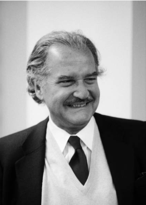
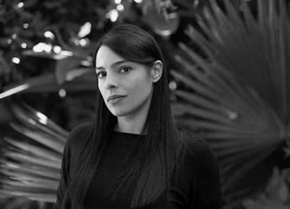

Pablo Neruda
Escritor chileno, nacido el 12 de julio de 1904.
Especialidad: Poesía.
Institución: Instituto Pedagógico de la Universidad de Chile.
Estudios: Pedagogía en Francés.
Gabriel García Márquez
Escritor colombiano, nacido el 6 de marzo de 1927.
Especialidad: Narrativa y Crónica.
Institución: Universidad Nacional de Colombia.
Estudios: Derecho y Periodismo.
Leopoldo Marechal
Escritor argentino, nacido el 11 de junio de 1900.
Especialidad: Narrativa.
Institución: No especificada.
Estudios: No especificados.
Mario Vargas Llosa
Escritor peruano, nacido el 28 de marzo de 1936.
Especialidad: Novela y Ensayo.
Institución: Universidad Nacional Mayor de San Marcos.
Estudios: Literatura y Derecho.
José Luis Borges
Escritor argentino, nacido el 24 de agosto de 1899.
Especialidad: Narrativa.
Institución: Universidad de Buenos Aires.
Estudios: Filosofía y Letras.
José Lezama Lima
Escritor cubano, nacido el 19 de diciembre de 1910.
Especialidad: Poesía.
Institución: No especificada.
Estudios: No especificados.
Octavio Paz Lozano
Escritor mexicano, nacido el 31 de marzo de 1914.
Especialidad: Ensayo.
Institución: No especificada.
Estudios: No especificados.
Juan Rulfo
Escritor mexicano, nacido el 16 de mayo de 1917.
Especialidad: Narrativa.
Institución: No especificada.
Estudios: No especificados.
Carlos Fuentes
Escritor mexicano, nacido el 11 de noviembre de 1928.
Especialidad: Política.
Institución: Universidad Nacional Autónoma de México.
Estudios: Derecho.
Julio Cortázar
Escritor argentino, nacido el 26 de agosto de 1914.
Especialidad: Novela.
Institución: Universidad de Buenos Aires.
Estudios: Letras.
Carlos Manuel Álvarez
Escritor cubano, nacido el 1 de enero de 1989.
Especialidad: Crónica.
Institución: No especificada.
Estudios: No especificados.
Rubén Darío
Escritor nicaragüense, nacido el 18 de enero de 1867.
Especialidad: Poesía.
Institución: No especificada.
Estudios: No especificados.
José Donoso

Escritor chileno, nacido el 5 de octubre de 1924.
Especialidad: Narrativa.
Institución: Universidad de Chile.
Estudios: Literatura.
Alejo Carpentier

Escritor cubano, nacido el 26 de diciembre de 1904.
Especialidad: Novela.
Institución: Universidad de La Habana.
Estudios: Arquitectura.
Ernesto Sábato
Escritor argentino, nacido el 24 de junio de 1911.
Especialidad: Ensayo.
Institución: Universidad Nacional de La Plata.
Estudios: Física.
Fernando Del Paso Morante
Escritor mexicano, nacido el 1 de abril de 1935.
Especialidad: Narrativa.
Institución: Universidad Nacional Autónoma de México.
Estudios: Filosofía.
Miguel Ángel Asturias
Escritor guatemalteco, nacido el 19 de octubre de 1899.
Especialidad: Teatro.
Institución: No especificada.
Estudios: No especificados.
Jorge Ricardo Isaacs Ferrer
Escritor colombiano, nacido el 1 de abril de 1837.
Especialidad: Narrativa.
Institución: No especificada.
Estudios: Literatura.
Miguel Otero Silva
Escritor venezolano, nacido el 26 de octubre de 1908.
Especialidad: Crónica.
Institución: No especificada.
Estudios: Periodismo.
Eduardo Galeano
Escritor uruguayo, nacido el 3 de septiembre de 1940.
Especialidad: Ensayo.
Institución: No especificada.
Estudios: Historia.
Gabriela Mistral
Escritora chilena, nacida el 7 de abril de 1889.
Especialidad: Poesía.
Institución: Escuela Normal de Preceptoras de La Serena.
Estudios: Educación.
Isabel Allende
Escritora chilena, nacida el 2 de agosto de 1942.
Especialidad: Narrativa.
Institución: Universidad de Chile.
Estudios: Periodismo.
Laura Esquivel
Escritora mexicana, nacida el 30 de septiembre de 1950.
Especialidad: Novela.
Institución: No especificada.
Estudios: No especificados.
Sor Juana Inés de la Cruz
Escritora mexicana, nacida el 12 de noviembre de 1648.
Especialidad: Poesía y Ensayo.
Institución: Convento de San Jerónimo.
Estudios: Filosofía y Teología.
Rosario Castellanos

Escritora mexicana, nacida el 25 de mayo de 1925.
Especialidad: Narrativa.
Institución: Universidad Nacional Autónoma de México.
Estudios: Filosofía y Letras.
Elena Poniatowska
Escritora mexicana, nacida el 19 de mayo de 1932.
Especialidad: Crónica.
Institución: No especificada.
Estudios: No especificados.
Clarice Lispector
Escritora brasileña, nacida el 10 de diciembre de 1920.
Especialidad: Narrativa.
Institución: Universidad Federal de Río de Janeiro.
Estudios: Derecho.
María Luisa Bombal
Escritora chilena, nacida el 8 de junio de 1910.
Especialidad: Novela.
Institución: Universidad de Chile.
Estudios: Literatura.
Samanta Schweblin
Escritora argentina, nacida el 7 de marzo de 1978.
Especialidad: Narrativa.
Institución: No especificada.
Estudios: No especificados.
Valeria Luiselli
Escritora mexicana, nacida el 16 de agosto de 1983.
Especialidad: Ensayo.
Institución: Universidad Nacional Autónoma de México.
Estudios: Filosofía.
Fernanda Melchor
Escritora mexicana, nacida el 30 de octubre de 1982.
Especialidad: Narrativa.
Institución: No especificada.
Estudios: No especificados.
Mónica Ojeda

Escritora ecuatoriana, nacida el 14 de septiembre de 1988.
Especialidad: Narrativa.
Institución: Universidad Católica de Santiago de Guayaquil.
Estudios: Literatura.
Mariana Enríquez
Escritora argentina, nacida el 8 de diciembre de 1973.
Especialidad: Narrativa.
Institución: Universidad Nacional de La Plata.
Estudios: Periodismo.
Cristina Rivera Garza
Escritora mexicana, nacida el 1 de octubre de 1964.
Especialidad: Ensayo.
Institución: Universidad Autónoma de Nuevo León.
Estudios: Historia.
Guadalupe Nettel
Escritora mexicana, nacida el 27 de mayo de 1973.
Especialidad: Narrativa.
Institución: Universidad Nacional Autónoma de México.
Estudios: Letras.
Ariana Harwicz
Escritora argentina, nacida el 3 de diciembre de 1977.
Especialidad: Narrativa.
Institución: Universidad de Buenos Aires.
Estudios: Filosofía.
María Fernanda Ampuero
Escritora ecuatoriana, nacida el 30 de junio de 1976.
Especialidad: Narrativa.
Institución: Universidad Católica de Santiago de Guayaquil.
Estudios: Literatura.
Margarita García Robayo
Escritora colombiana, nacida el 7 de noviembre de 1980.
Especialidad: Narrativa.
Institución: Universidad de los Andes.
Estudios: Comunicación.
Fernanda Trías
Escritora uruguaya, nacida el 12 de junio de 1976.
Especialidad: Narrativa.
Institución: Universidad de la República.
Estudios: Letras.
Piedad Bonnett
Escritora colombiana, nacida el 18 de enero de 1951.
Especialidad: Poesía, novela, dramaturgia y crítica literaria.
Institución: Universidad de los Andes.
Estudios: Filosofía y Letras.